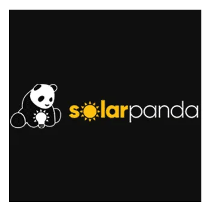
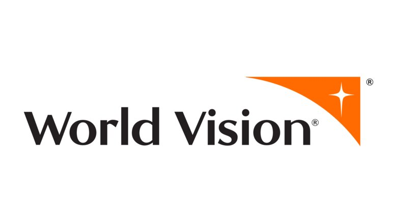

Girls for Girls
Sanitary Pad Initiative: Empowering Girls
A community initiative combining sanitary pad support with life skills and mental wellness conversations to help girls remain confident and engaged in school.
Discover stories of community action, resilience, and transformation from Poverty Africa Kenya.
Real stories and practical insights from the people, communities, and programmes at the heart of our work.
A community initiative combining sanitary pad support with life skills and mental wellness conversations to help girls remain confident and engaged in school.

Practical approaches to understanding stress, strengthening emotional resilience, and creating healthier conversations around mental wellness.
Conversations exploring community impact, inclusion, mental wellness, and practical approaches to social change.
We collaborate with organizations that share our commitment to sustainable and inclusive community development.
 Broad Experiential
Broad Experiential

Solar Panda
World Vision